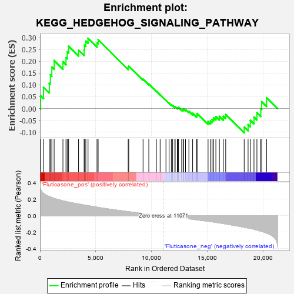
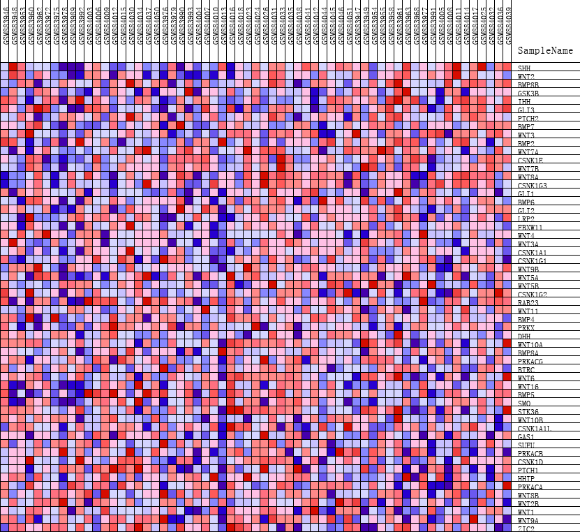
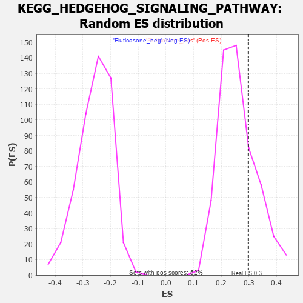

| | | Dataset | GSEA_expr_Flu.GSEA_timepoint.cls#Fluticasone |
| Phenotype | GSEA_timepoint.cls#Fluticasone |
| Upregulated in class | Fluticasone_pos |
| GeneSet | KEGG_HEDGEHOG_SIGNALING_PATHWAY |
| Enrichment Score (ES) | 0.29788324 |
| Normalized Enrichment Score (NES) | 1.1425382 |
| Nominal p-value | 0.2605364 |
| FDR q-value | 1.0 |
| FWER p-Value | 0.963 |
Table: GSEA Results Summary

Fig 1: Enrichment plot: KEGG_HEDGEHOG_SIGNALING_PATHWAY
Profile of the Running ES Score & Positions of GeneSet Members on the Rank Ordered List
| PROBE | DESCRIPTION
(from dataset) | GENE SYMBOL | GENE_TITLE | RANK IN GENE LIST | RANK METRIC SCORE | RUNNING ES | CORE ENRICHMENT | | 1 | SHH | NA | | | 57 | 0.318 | 0.0537 | Yes |
| 2 | WNT2 | NA | | | 318 | 0.272 | 0.0897 | Yes |
| 3 | BMP8B | NA | | | 837 | 0.233 | 0.1066 | Yes |
| 4 | GSK3B | NA | | | 929 | 0.228 | 0.1428 | Yes |
| 5 | IHH | NA | | | 1063 | 0.221 | 0.1757 | Yes |
| 6 | GLI3 | NA | | | 1270 | 0.211 | 0.2034 | Yes |
| 7 | PTCH2 | NA | | | 2060 | 0.180 | 0.1983 | Yes |
| 8 | BMP7 | NA | | | 2332 | 0.173 | 0.2161 | Yes |
| 9 | WNT3 | NA | | | 2445 | 0.169 | 0.2409 | Yes |
| 10 | BMP2 | NA | | | 2568 | 0.165 | 0.2644 | Yes |
| 11 | WNT7A | NA | | | 3462 | 0.142 | 0.2476 | Yes |
| 12 | CSNK1E | NA | | | 3962 | 0.130 | 0.2472 | Yes |
| 13 | WNT7B | NA | | | 3991 | 0.130 | 0.2689 | Yes |
| 14 | WNT8A | NA | | | 4112 | 0.126 | 0.2856 | Yes |
| 15 | CSNK1G3 | NA | | | 4313 | 0.122 | 0.2979 | Yes |
| 16 | GLI1 | NA | | | 5117 | 0.103 | 0.2784 | No |
| 17 | BMP6 | NA | | | 5220 | 0.101 | 0.2916 | No |
| 18 | GLI2 | NA | | | 7915 | 0.050 | 0.1736 | No |
| 19 | LRP2 | NA | | | 7965 | 0.049 | 0.1800 | No |
| 20 | FBXW11 | NA | | | 9249 | 0.028 | 0.1246 | No |
| 21 | WNT4 | NA | | | 9765 | 0.019 | 0.1038 | No |
| 22 | WNT3A | NA | | | 10446 | 0.009 | 0.0734 | No |
| 23 | CSNK1A1 | NA | | | 10781 | 0.004 | 0.0584 | No |
| 24 | CSNK1G1 | NA | | | 11304 | -0.004 | 0.0345 | No |
| 25 | WNT9B | NA | | | 11587 | -0.008 | 0.0226 | No |
| 26 | WNT5A | NA | | | 11785 | -0.011 | 0.0153 | No |
| 27 | WNT5B | NA | | | 11904 | -0.013 | 0.0121 | No |
| 28 | CSNK1G2 | NA | | | 12102 | -0.016 | 0.0057 | No |
| 29 | RAB23 | NA | | | 12131 | -0.017 | 0.0073 | No |
| 30 | WNT11 | NA | | | 12322 | -0.020 | 0.0019 | No |
| 31 | BMP4 | NA | | | 12384 | -0.021 | 0.0027 | No |
| 32 | PRKX | NA | | | 12430 | -0.022 | 0.0044 | No |
| 33 | DHH | NA | | | 12713 | -0.026 | -0.0042 | No |
| 34 | WNT10A | NA | | | 12843 | -0.029 | -0.0052 | No |
| 35 | BMP8A | NA | | | 12876 | -0.029 | -0.0015 | No |
| 36 | PRKACG | NA | | | 13059 | -0.032 | -0.0044 | No |
| 37 | BTRC | NA | | | 13362 | -0.037 | -0.0120 | No |
| 38 | WNT6 | NA | | | 13697 | -0.043 | -0.0201 | No |
| 39 | WNT16 | NA | | | 14059 | -0.049 | -0.0283 | No |
| 40 | BMP5 | NA | | | 14098 | -0.050 | -0.0213 | No |
| 41 | SMO | NA | | | 15083 | -0.067 | -0.0556 | No |
| 42 | STK36 | NA | | | 15303 | -0.072 | -0.0532 | No |
| 43 | WNT10B | NA | | | 15444 | -0.074 | -0.0466 | No |
| 44 | CSNK1A1L | NA | | | 15582 | -0.077 | -0.0393 | No |
| 45 | GAS1 | NA | | | 15783 | -0.081 | -0.0343 | No |
| 46 | SUFU | NA | | | 16097 | -0.088 | -0.0335 | No |
| 47 | PRKACB | NA | | | 16451 | -0.095 | -0.0332 | No |
| 48 | CSNK1D | NA | | | 16666 | -0.100 | -0.0255 | No |
| 49 | PTCH1 | NA | | | 18324 | -0.140 | -0.0786 | No |
| 50 | HHIP | NA | | | 18674 | -0.150 | -0.0685 | No |
| 51 | PRKACA | NA | | | 18874 | -0.156 | -0.0502 | No |
| 52 | WNT8B | NA | | | 19202 | -0.165 | -0.0364 | No |
| 53 | WNT2B | NA | | | 19466 | -0.174 | -0.0179 | No |
| 54 | WNT1 | NA | | | 19812 | -0.187 | -0.0010 | No |
| 55 | WNT9A | NA | | | 19895 | -0.190 | 0.0289 | No |
| 56 | ZIC2 | NA | | | 20331 | -0.211 | 0.0459 | No |
Table: GSEA details [plain text format]

Fig 2: KEGG_HEDGEHOG_SIGNALING_PATHWAY
Blue-Pink O' Gram in the Space of the Analyzed GeneSet

Fig 3: KEGG_HEDGEHOG_SIGNALING_PATHWAY: Random ES distribution
Gene set null distribution of ES for KEGG_HEDGEHOG_SIGNALING_PATHWAY